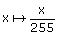
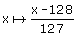
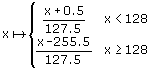
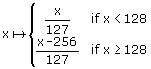
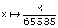
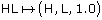
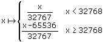
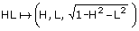

By applying one of the input modifiers below to the second operand of a dot product instruction, the dot mapping mode for that operand can be changed. The modifiers are grouped by how they treat their input color.
The input modifiers below treat their input color as a 32-bit argb. The alpha value is ignored.
| Name | Result |
|---|---|
| (no modifier) | Each 8-bit component, x, uses the mapping:  The dot product is taken using (r, g, b). |
| _sign1 | Each 8-bit component, x, uses the mapping:  The dot product is taken using (r, g, b). |
| _sign2 | Each 8-bit component, x, uses the mapping:  The dot product is taken using (r, g, b). |
| _sign3 | Each 8-bit component, x, uses the mapping:  The dot product is taken using (r, g, b). |
The input modifiers below treat their input color as two 16-bit unsigned numbers, HL.
| Name | Result |
|---|---|
| _hl | Each 16-bit component, x, uses the mapping:  The dot product is taken using  |
| _hemi _hemi1 _hemi2 _hemi3 (All of these are treated the same.) |
Each 16-bit component, x, uses the mapping:  The dot product is taken using  |
The following is the list of pixel shader dot product instructions:
The following example shows how these modifiers might be used:
texm3x3spec t3, t0_hemi3, c0